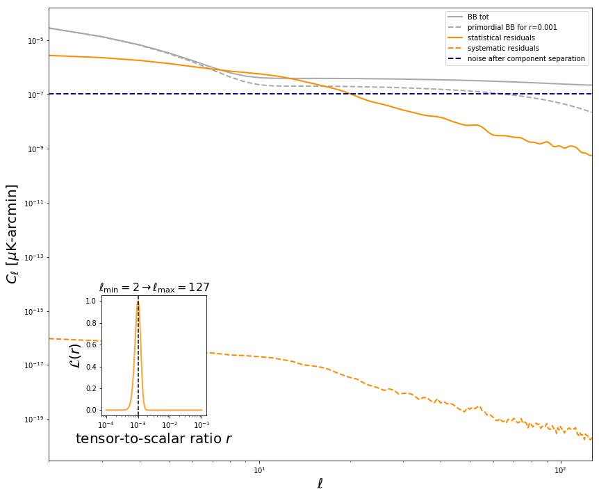

Forecasting¶
In [1]:
%load_ext autoreload
%autoreload 2
import pysm
from fgbuster.observation_helpers import get_instrument, get_sky
import healpy as hp
import numpy as np
from fgbuster import xForecast, CMB, Dust, Synchrotron
nside = 64
# define sky and foregrounds simulations
sky = pysm.Sky(get_sky(nside, 'd0s0'))
# define instrument
instrument = pysm.Instrument(get_instrument('cmbs4', nside))
# get noiseless frequency maps
freq_maps = instrument.observe(sky, write_outputs=False)[0]
# take only the Q and U maps
freq_maps = freq_maps[:,1:]
nu (GHz) | sigma_I (uK_CMB amin) | sigma_P (uK_CMB amin) | FWHM (arcmin)
0020.00 | 16.66 | 13.60 | 00.00
0030.00 | 10.62 | 08.67 | 00.00
0040.00 | 10.07 | 08.22 | 00.00
0085.00 | 02.01 | 01.64 | 00.00
0095.00 | 01.59 | 01.30 | 00.00
0145.00 | 04.53 | 02.03 | 00.00
0155.00 | 04.53 | 02.03 | 00.00
0220.00 | 11.61 | 05.19 | 00.00
0270.00 | 15.84 | 07.08 | 00.00
Instrument attribute 'pixel_indices' not set.
In [2]:
# create 3% circular sky mask
RA = 2*np.pi-70.*np.pi/180
DEC = np.pi/2+70.*np.pi/180
radius = 34*np.pi/180
mask_circular = np.zeros(12*nside**2)
for ipix in range(12*nside**2):
theta, phi = hp.pix2ang(nside, ipix)
if (((phi - RA)**2 + (theta - DEC)**2 <= radius**2)):
mask_circular[ipix] = 1.0
if (((phi - RA+2*np.pi)**2 + (theta - DEC)**2 <= radius**2)):
mask_circular[ipix] = 1.0
# applying mask to observed frequency maps
freq_maps[...,mask_circular==0] = 0.0
In [3]:
# define components used in the modeling
components = [CMB(), Dust(150.), Synchrotron(150.)]
In [4]:
# call for xForecast
# with lmin=2, lmax=2*nside-1, and Alens=0.1
# you can try with make_figure=True if you want to output angular power spectra and profile likelihood on r
res = xForecast(components, instrument, freq_maps, 2, 2*nside-1, Alens=0.1, r=0.001, make_figure=True)
('fsky = ', 0.030192057291666668)
======= ESTIMATION OF SPECTRAL PARAMETERS =======
('res.x = ', array([ 1.54, 20. , -3. ]))
======= ESTIMATION OF NOISE AFTER COMP SEP =======
======= COMPUTATION OF CL_FGS =======
/Users/dpoletti/software/fgbuster/fgbuster/algebra.py:814: RuntimeWarning: invalid value encountered in divide
/ np.linalg.norm(As_dB_i, axis=-1))
======= ESTIMATION OF STAT AND SYS RESIDUALS =======
======= OPTIMIZATION OF COSMO LIKELIHOOD =======
('bounds on r = ', 0.00098625217948687845, ' / ', 0.0010328281259410286)
('starting point = ', 0.0010092715146305707)
(' ===>> fitted r = ', array([ 0.00099999]))
======= ESTIMATION OF SIGMA(R) =======
('ind_sr_min = ', 1)
('sr_grid[ind_sr_min-1] = ', 0.00099999486277154185)
('sr_grid[ind_sr_min+1] = ', 0.0017782710358951715)
('sr_grid = ', array([ 9.99994863e-04, 1.33351487e-03, 1.77827104e-03,
2.37136305e-03, 3.16226412e-03, 4.21694788e-03,
5.62339159e-03, 7.49891481e-03, 9.99996575e-03,
1.33351715e-02, 1.77827408e-02, 2.37136711e-02,
3.16226954e-02, 4.21695511e-02, 5.62340121e-02,
7.49892765e-02, 9.99998288e-02, 1.33351943e-01,
1.77827713e-01, 2.37137117e-01, 3.16227495e-01,
4.21696233e-01, 5.62341084e-01, 7.49894049e-01,
1.00000000e+00]))
case # 3
('bounds on sigma(r) = ', 0.00099999486277154185, ' / ', 0.0017782710358951715)
('starting point = ', 0.0013335148670002136)
(' ===>> sigma(r) = ', array([ 0.00030872]))
======= GRIDDING COSMO LIKELIHOOD =======
